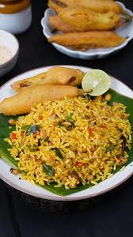

Top Things to Do in Rayadurg

Explore the Historic Fort
Step back in time by exploring the majestic Rayadurg Fort, a significant stronghold of the Vijayanagara Empire, featuring ancient temples and stunning monolithic statues.

Discover the Garment Hub
Witness the town's vibrant modern economy, known as a major hub for jeans manufacturing and traditional silk weaving, blending craftsmanship with industry.

Savor Local Delicacies
Treat your taste buds to authentic and spicy Rayalaseema cuisine, including local favorites like Uggani (or Vagani) and Ragi Sangati, for a true taste of the region.